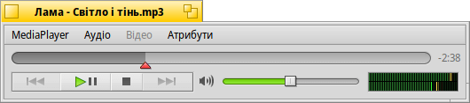
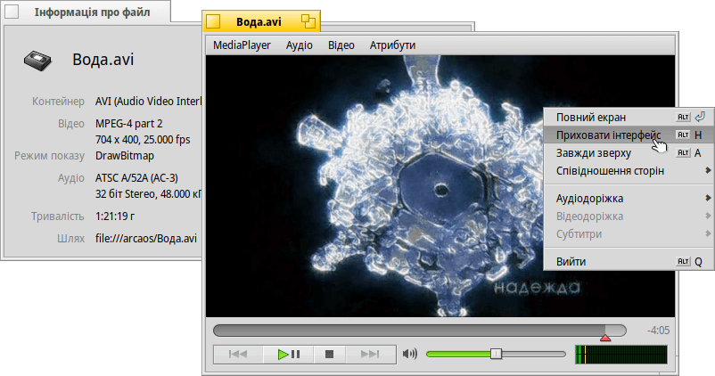
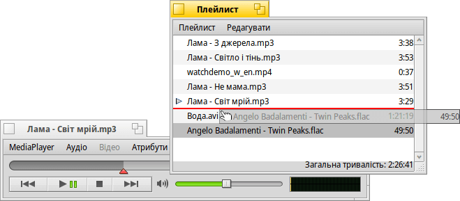
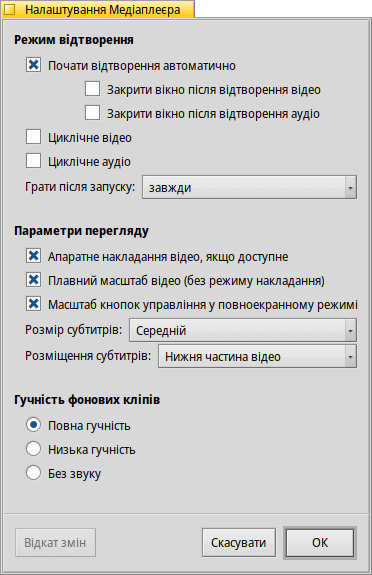

MediaPlayer (Медіаплеєр)
| Deskbar: | ||
| Розташування: | /boot/system/apps/MediaPlayer | |
| Налаштування: | ~/config/settings/MediaPlayer |
MediaPlayer (Медіаплеєр) – це стандартний програвач для відтворення усіх аудіо- та відеофайлів. Завдяки внутрішній реалізації ffmpeg підтримується безліч поширених форматів. Його простий інтерфейс має усі необхідні елементи управління які Ви очікуєте:
Повзунок індикатора виконання дозволяє швидко переходити до потрібної позиції а наведення курсору миші на нього показує для поточного кліпу час відтворення і час, який залишився. Натискання на відображення часу праворуч від нього перемикає між тривалістю, часом відтворення і часом, який залишився.
Нижче Ви знайдете звичайні елементи управління для переходу до попередньої доріжки, відтворення/паузи, зупинки і переходу до наступної доріжки. Далі йде регулятор гучності (натискання на символ динаміка вмикає або вимикає звук) та індикатор рівня сигналу.
Відтворення аудіо та відео
Оскільки для відтворення аудіо не існує спеціальних функцій, ми перейдемо одразу до відео або загальних функцій.
Для усіх медіафайлів доступний пункт меню (ALT I). Інформаційна панель показує дані поточного завантаженого файлу, такі як час відтворення або відомості про аудіо/відео доріжку та її кодек.
Більшість команд меню, які часто використовуються, також доступні у контекстному меню правої кнопки миші в області відео. Це дуже зручно у повноекранному режимі.
Пункт меню пропонує опції масштабування вікна до різних рівнів або примусової зміни співвідношення сторін до деяких стандартних значень. Співвідношення сторін за замовчуванням найкраще працюватиме з правильно закодованими файлами.
MediaPlayer підтримує субтитри у форматі SRT. Щоб вони відображались у пункті меню їхні назви файлів мають бути ідентичними з назвою відеофайлу, з суфіксом мови та розширенням «.srt» замість стандартного розширення для відео. Наприклад:
MyMovie.avi MyMovie.Russian.srt MyMovie.English.srt MyMovie.Ukrainian.srt
Кілька звукових доріжок, які найчастіше використовуються для кількох мов у одному відеофайлі, доступні у підменю . Підменю пропонує те саме, якщо доступно кілька відеопотоків.
Ви можете увімкнути режим (клавіші ALT ENTER, або F, або подвійний лівий клік миші), сховати елементи інтерфейсу Медіаплеєра використавши пункт (клавіші ALT H або подвійний правий клік миші) або зробити вікно плеєра (клавіші ALT A).
Список відтворення (Плейлист)
Пункт меню (клавіші ALT P) відкриває вікно з файлами, що стоять у черзі на відтворення. Подвійний клік на елементі цього списку запускає медіафайл на відтворення.
Ви можете додавати нові файли, перетягуючи їх до списку, а також змінювати їхнє розташування за допомогою перетягування. Нові файли додаються у тому порядку, у якому вони були вибрані у вікні Tracker. Перетягування правою кнопкою миші показує контекстне меню для вставки (за алфавітом) файлів.
У меню Ви можете вибрати порядок файлів у списку, або елемент зі списку, або видалити реальний файл за допомогою команди (клавіші ALT T).
Звичайно, Ви можете плейлист і пізніше його знову або запустити його, простим подвійним кліком на файлі плейлиста.
Налаштування
Існують деякі настройки для тюнінгу поведінки MediaPlayer:
Перший блок параметрів, , не потребує пояснень.
Починати відтворення автоматично, закривати вікна після завершення або відтворювати кліпи у циклі.
У списку, який розкривається, Ви обираєте поведінку MediaPlayer під час запуску. Продовжувати відтворення з того місця, де він зупинився минулого разу: , або .
Далі йде блок .
Режим , зменшує навантаження на процесор але працює лише для одного вікна відео і потребує підтримки драйвером відеокарти.
Режим , використовує дуже швидку фільтрацію для згладжування під час масштабування відео або перегляду у повноекранному режимі.
Опція дозволяє трохи збільшувати кнопки для оптимального вигляду у повноекранному режимі.
Далі йдуть настройки і . Субтитри можна показувати з опцією , тоді вони завжди будуть накладені на зображення. Або , що дає змогу змінити розмір вікна по вертикалі і субтитри з'являться на чорній смузі внизу.
Останній блок параметрів визначає гучність кліпів, вікна яких наразі не активні. Ви можете вибирати з трьох варіантів: , або .
Управління з клавіатури
MediaPlayer пропонує зручні комбінації клавіш для управління відтворенням без використання миші.
| Z | Перейти до попередньої доріжки | |
| X | Відтворити | |
| C | Призупинити (Пауза) | |
| V | Зупинити | |
| B | Перейти до наступної доріжки |
Ці клавіші призначені для виконання функцій кнопок управління. Вони завжди є лівими нижніми клавішами літер на клавіатурі, тобто використовуються незалежно від поточної розкладки клавіш. Наведені вище клавіші відповідають стандартній розкладці клавіатури «US-american».
| ← / → | Прокрутка назад/вперед | |
| SHIFT ← / → | Прокрутити назад/вперед на 10 секунд | |
| ALT ← / → | Прокрутити назад/вперед на 30 секунд | |
| ↓ / ↑ | Збільшити/Зменшити гучність | |
| ALT ↓ / ↑ | Перейти до наступної/попередньої доріжки | |
| Пробіл (Spacebar) | Перемикання відтворення/пауза | |
| ALT ENTER | Перемикання повноекранного режиму (також здійснюється подвійним кліком лівою кнопкою миші в області відео або натисканням клавіші F чи TAB). | |
| ALT SHIFT 0 / 1 / 2 / 3 | Змінити співвідношення сторін: (як було закодовано відео), (відео виводиться на екран 1:1), , . |